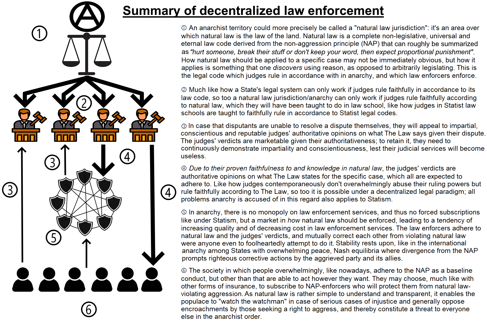
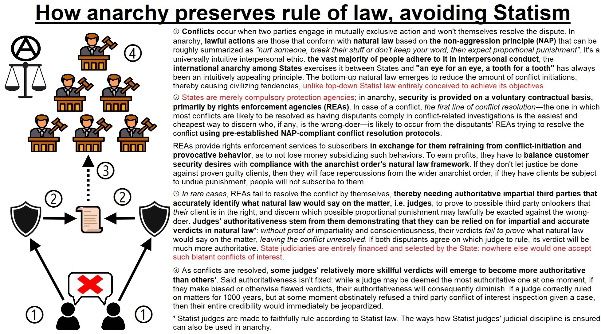
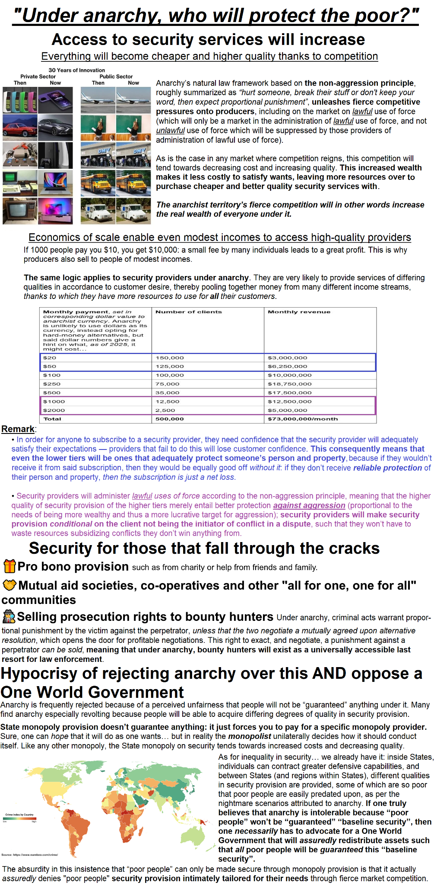
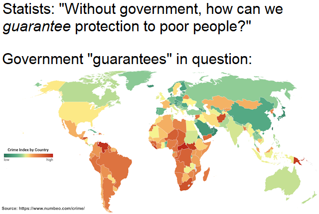
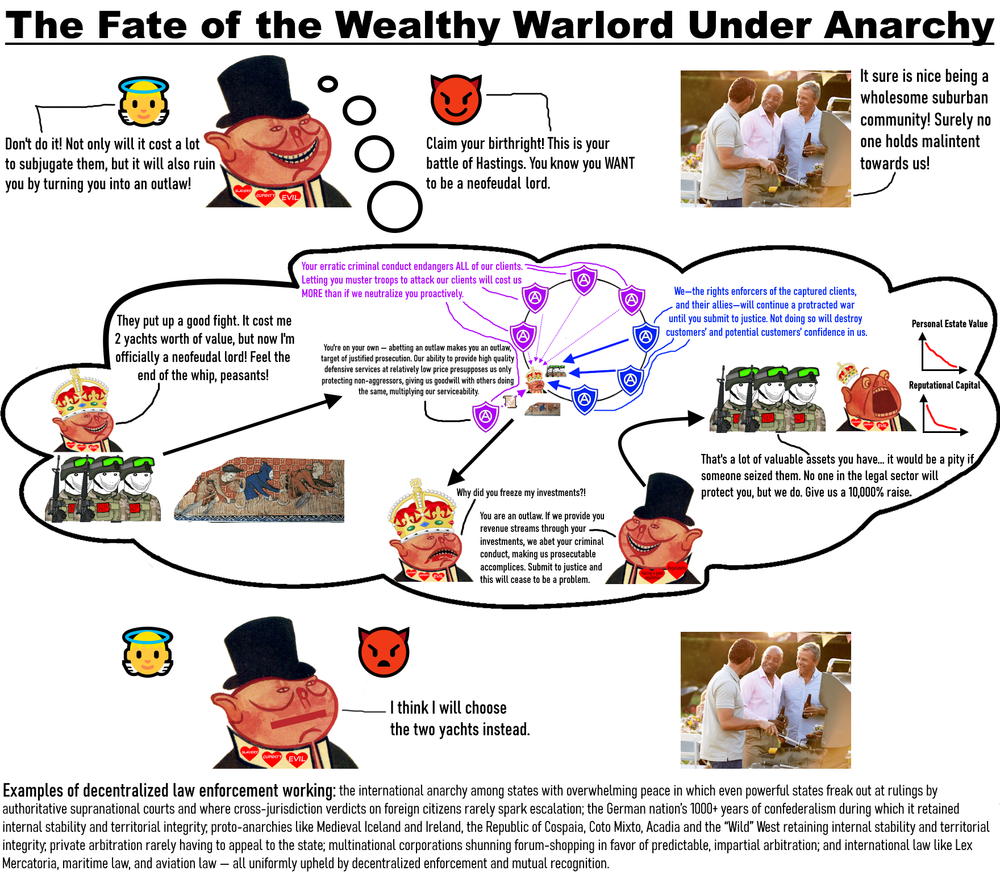
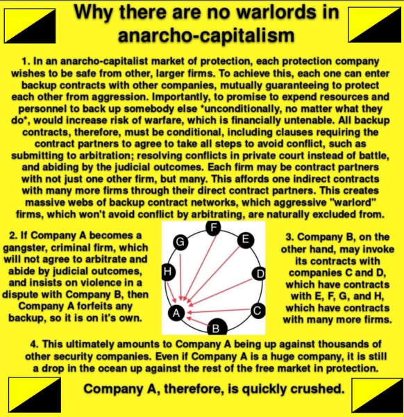
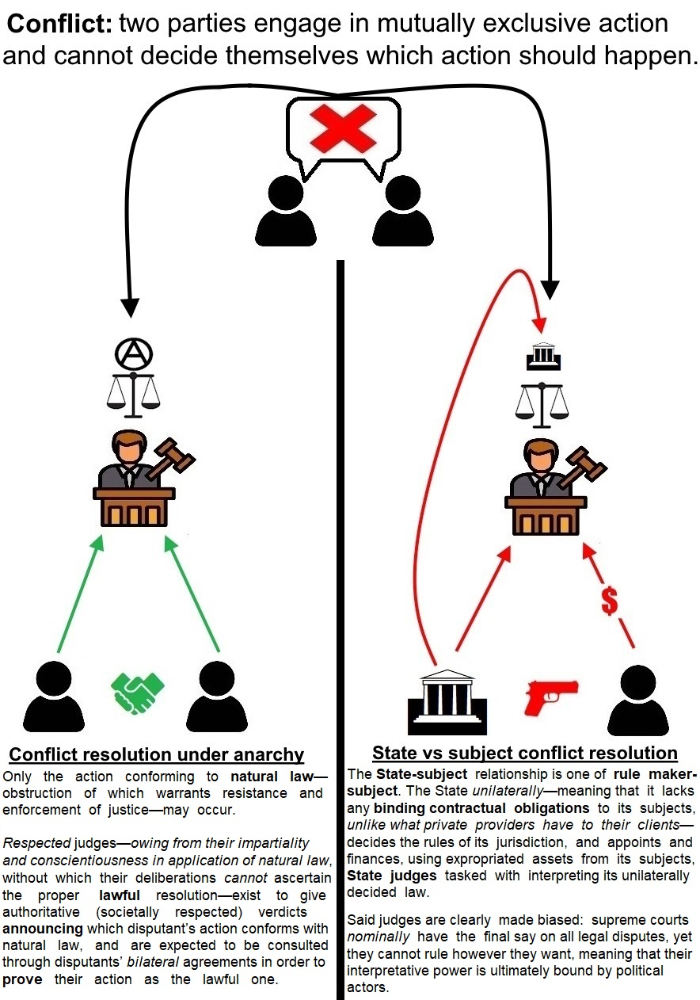
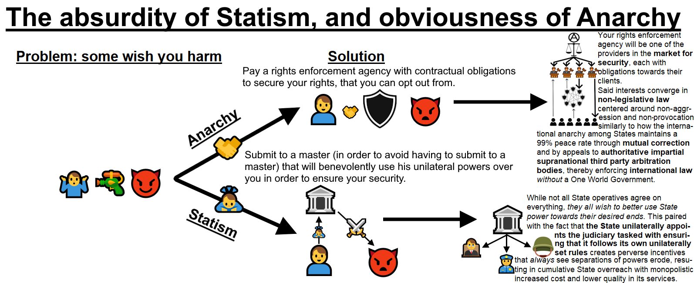

An introductory text intending to give an overview of anarchy by rebutting its most potent concern
Q: What’s stopping a rich person from hiring mercenaries and
taking over?
A: Their property and reputation would become
radioactive. Defense insurance agencies, insurance agencies also tasked
with providing defense, would drop them, other agencies would share
intel, and the black market they’d rely on would extort them. War is
expensive, defense is proportionally cheaper.
Q: But wouldn’t some corporations try to rule like feudal
lords?
A: Not without centralized coercive power. Corporations
depend on customer trust and voluntary contracts. If a corporation
violates the NAP, its value collapses and it faces legal
retaliation.
Q: Doesn’t Statism have courts to prevent
tyranny?
A: Yes, but those courts work for the State.
Imagine being hired to block your boss’s agenda—you’ll be replaced or
sidelined. Anarchist courts compete; their legitimacy comes from
persuasion, not monopoly.
Q: What happens if judges or DIAs become
corrupt?
A: They lose clients and credibility. Like any
business, bad service means market collapse. Unlike governments, they
don’t have a captive population or taxing power to fall back on.
Q: Can poor people afford justice under
anarchy?
A: Yes. Economies of scale mean DIAs will compete for
mass-market clients. Security becomes a subscription like phone or
health insurance—modular and affordable, especially with self-defense
discounts.
A common retort to the anarchist proposal of a Stateless, voluntarist order is the fear of corporate or elite takeover: that without a centralized State to restrain them, the ultra-wealthy will transform society into a neo-feudal corporatocracy, where economic titans become de facto rulers and everyone else a vulnerable underclass.
At first glance, this concern seems intuitive: wealth brings power, power seeks expansion, and if nothing constrains the powerful, what stops them from becoming untouchable overlords? And if you’re wealthy enough to always get your way, why wouldn’t you just install yourself as a god among men?
This text argues that this narrative, though undeniably expressing a valid concern, misunderstands both how decentralized law enforcement works and what motivates real-world elites. The anarchist order is not an open playground for warlords, but a self-stabilizing network of voluntarily funded legal and defense institutions with vested interests in the system’s preservation—designed from the ground up to prevent domination, regardless of wealth. By elaborating how a worst-case scenario is dealt with, this text serves to also outline how lesser violations are dealt with.
Rich individuals today already possess more freedom, security, and influence than any feudal lord could dream of. Ironically, that very abundance makes them far less likely—not more—to take on the burdens of rulership. Why waste time managing taxes, infrastructure, and unrest when you can instead spend that time, effort and those resources to fund space exploration, biohacking, or build your own island sanctuary on your terms?
The reasoning outlined in this text also applies to regular wannabe non-wealthy warlords.
An anarchist territory is simply a territory over which the non-aggression principle (NAP)-derived natural law is the law of the land. A synonym for “a state of anarchy” is thus “a natural law jurisdiction”.
The non-aggression principle is defined as the “prohibition of the initiation of uninvited physical interference with a person’s person or property, or threats made thereof”. Its implications can thus be roughly summarized as “hurt someone, break their stuff or don’t keep your word, then expect proportional punishment”. Natural law is merely the law code that follows from this principle. Anarchist law enforcement decentrally enforces natural law; a natural law jurisdiction is one where natural law applies over the entire territory, but where law enforcement agencies are not responsible to a single highest law enforcement agency’s decrees, but to their clients, the wider natural law jurisdiction and the authoritative judges’ verdicts (see the section How Anarchist Law and Order Works: An Overview). Anarchist law enforcement is thus decentralized enforcement of a uniform and universal law code.
This legal framework has many precedents:
For a justification regarding the primacy of natural law and further elaborations of it, see https://liquidzulu.github.io/libertarian-ethics/ .
As per the NAP, all fees one will pay will come about from voluntary exchanges. That being said, here are the outlines of freely financed institutions that are very likely to emerge in an anarchist society.

Core to anarchist law and order are defense insurance agencies (DIAs) or rights enforcement agencies (REAs), henceforth referred to as “DIAs”, that protect customers’ NAP-derived rights in exchange for payment. These agencies basically serve as the representatives of individual layman customers to the anarchist legal order: they are the actors specialized in protecting customers’ rights, be it in case of overt attacks (or proactive work to prevent instances thereof) and/or in case of the client being embroiled in a legal dispute, all the while operating within natural law’s confines.
Because DIAs will be seeking profits, they will expect their clients to refrain from engaging in aggressive (as defined in relation to the non-aggression principle, i.e. initiations of uninvited physical interference against a person’s person or property, or threats thereof) or provocative behaviors as a condition for receiving their service: were these to not be restricted, then the DIAs would simply be subsidizing costly initiatory confrontations, which are potentially limitless, at their own expense, contrary to their desires to make profits to make use of elsewhere; if they however were to drop innocent people who are targets of initiatory attacks, then they wouldn’t receive any customers at all. DIAs thus have to balance customer security desires with compliance with the anarchist order’s natural law framework.
This beautifully aligns the profit-driven interests of the DIAs with that of the preservation of an anarchist order: the sheer market logic makes DIAs opt for an order centered around non-aggression.
An added benefit of non-aggressive and non-provocative behaviors being necessary conditions for protection is that this way, DIAs’ service that crowd out offensively-oriented service providers, see the section What would happen to an individual rich person or a group thereof that attempts to use their wealth to take over (parts of) the anarchy, due to defensive providers by definition necessitating less expenditures in order to provide service and thus being more able to proliferate and thus force offensively-oriented service providers to adapt due to offensive services becoming too costly, will serve as a great equalizer between rich and poor as it pertains to protection of one’s rights.
As is elaborated in Through relatively small regular subscriptions, you can access larger resource pools, and thus impressive security and Why corporations (and rich people) will acquiesce to the NAP, if even a poor individual abides by non-aggression and non-provocation criteria, they will continue to be able to access high-quality service that even wealthy individuals will at least find very costly to overcome, and that if wealthy individuals don’t submit to justice after having aggressed, then they will become actively pursued outlaws relegated to the black market and sketchy black market security provision.
As elaborated in Anarchist law enforcement lacks this conundrum, DIAs will suffer at least mass unsubscribals if they fail to provide appropriate promised rights protection, even if it’s a low-paying client of theirs.
Consequently, if rich individuals were to attempt to aggress against poor individuals under anarchy, they would be very likely to suffer an unpleasant costly scenario as described in What would happen to an individual rich person or a group thereof that attempts to use their wealth to take over (parts of) the anarchy.
In other words, anarchy makes the bulk of security provision conditional on adherence to natural law, deviations of which will deprive one of its service, leaving one vulnerable to the full force of it. Security under anarchy is like a Damocles sword that will fall upon oneself if one aggresses against another.
DIAs are very likely to be financed on a subscription-basis. As a way to attract customers, they are likely to, outside of their rights protection services, also promise payouts to clients that are subject to unprovoked (remember that the criterion for “provocation” will have to be rather limited as to not scare away customers fearing being dropped for perceived unjustified reasons) attacks. Indeed, the vast majority of customers are likely to choose DIAs promising payouts in case that they are victimized as that spreads out their risk more. This means that a DIA willing to successfully appeal to this great majority’s demand will have to find out ways to minimize the risk that comes with promising payouts (better than other DIAs) to clients in case of victimization. This directly incentivizes said DIAs to engage in (law-bound, as committing crimes in order to ensure that your client will not be subjected to crimes will in turn cause you to be prosecuted by those you victimized) preventative measures conducive to minimizing the risk for and magnitude of payouts, turning such DIAs into actively civilizing agents. Such DIA’s rights protections will thus be proactive and rapidly responding, since such actions reduce the amount of money they will have to pay out in payouts.
This contrasts State police whose “subscription fees” are derived through unilateral impositions, giving them no direct incentive to actually deal with crime, instead only having the direct incentive to comply with their government superiors’ priorities. This is reflected in their infamous regular failures in protecting citizens’ rights as per their and suboptimally allocating the proper amount of resources for their services in response to market demand, alternatively being underinvested or being overinvested. DIAs in contrast will be under constant market pressure to lower the price of their subscription fees all the while standing true to their promises of rights protection, and thus be directly incentivized to optimally allocate the appropriate amount of resources to deal with a current crime level.
As we will see below, DIAs will also have the added benefit of having direct incentives in increasing their clients’ security as a way to reduce the risk of and magnitude of payouts, which stands in stark contrast to Statist systems that don’t allow for tax decreases in case of a reduction in risk level.
Summary breakdown of this section: The Recursive Legal Embedding Process
Statist critics often claim that an anarchist society will inevitably decay. They argue that as rights-enforcers in a decentralized system accumulate power, they will be tempted to diverge from natural law—seeking to dominate rather than defend. According to this view, only a sovereign can enforce discipline, and without it, chaos or corruption will follow.
This fear misunderstands both market dynamics and institutional incentives under natural law which in fact directly align rational self-interest with the system’s preservation.
Non-aggression principle-based natural law delegates rights to exclusively direct specific scarce means. Rights to exclusively direct specific scarce means entail the right to exclude others from disturbing direction of specific, insofar as such exclusionary acts are proportional. The right to exclude others from disturbing direction of specific scarce means insofar as they remain proportional entails the right to hire actors to enforce it whenever necessary. People who have established property rights over specific scarce means are expected to want to be able to direct said scarce means: a market in protecting their right to exclusively direct said scarce means will thus emerge.
Natural law thus partitions the world into potentially (they are only insurable insofar as they are not unowned/illegitimate/stolen property) insurable property titles—each a distinct object over which rights of exclusion can be enforced. This generates profit opportunities for DIAs:
Even ideologically neutral actors are incentivized to entrench the natural law framework—because doing so maximizes profit and minimizes risk. Anarchy does not depend on philosophical virtue. It depends on aligning self-interest with legal compliance, where the underlying legal precepts are derived from philosophical reasoning, albeit still practical and realistically enforceable.
The above outlined joining of rational self-interest with a desire to be protected through insurance is a mere economic argument.
What this argument doesn’t necessarily provide is the extent to which retaliations against rights violations can go, such as in punishment. This is rather derived from philosophical normative arguments.
So, the skeptic could grant that statelessness upheld by insurance agencies insuring property titles could work, but still argue that one that specifically upholds natural law to be unviable. Why would the DIAs resolve conflicts according to natural law out of all legal codes?
The reason why is a simple one: if a stateless order is implemented and establishes at least a rudimentary natural law-based decentralized law and order that can withstand attempts to replace it with non-natural law, then participation within said natural law-based stateless order will be predicated on compliance with natural law. Once this is put in place, the following steps will follow that see it strengthen itself by sheer virtue of inviting actors that want to provide insurance services, who in operating within its mutually corrective legal paradigm have to comply with it in order to stay in business there.
In an anarchist order, power is not granted by decree but earned through performance. DIAs must consistently demonstrate that they:
Any deviation—whether through incompetence, corruption, or aggression—is punished by the market/wider anarchist order: clients leave, alliances dissolve, reputations collapse and potential prosecutions or punitive responses may follow if the deviations warrant it — thereby diminishing the DIA’s competitiveness in the market to insure property titles, leaving them vulnerable to be out-competed by providers with superior performance. Power (see footnote 2) is thus filtered through competitive pressure, not centralized coercion. The competitive pressure in turn sets a tendency towards increased quality in service and decreased cost.
See Why corporations (and rich people) will acquiesce to the NAP and The self-interested rationale behind ostracization for reasoning why the reputational radioactiveness of cooperating with criminal actors are detrimental for someone wishing to gain more power. Similar reasoning applies for doing criminal deeds.
Contrary to the “entropy” argument, decentralized law enforcement under natural law generates a self-reinforcing cycle of improvement:
This system resembles an evolutionary process. Each generation of DIAs must match or exceed the legal and operational performance of their predecessors—including staying current with authoritative judicial rulings. While most of natural law is stable and intuitive, court decisions on novel or marginal cases clarify edge conditions. DIAs that fail to incorporate such precedents risk losing disputes, tarnishing their reputation, and alienating clients.
Thus, legal adaptation is not optional—it’s a competitive necessity. Predatory divergence is not just immoral—it is structurally self-destructive in a system where legitimacy and profit are inseparable from lawful behavior.
Statist systems concentrate power, which enables corruption. In contrast, anarchist institutions cannot “flip” into States:
Power under anarchy is lawful. Power under Statism is unaccountable. One cannot be transformed into the other without collapse.
Trying to turn a DIA into a ruling force is as futile as converting a logistics firm into a pirate navy. It’s not a pivot—it’s an institutional collapse.
See the section “But what if your DIA suddenly turns on you to establish protection rackets?” for the general principles underlying why backstabbing one’s clients is such a very high-risk-medium-reward venture.
Anarchy is not an unstable void waiting to be filled by domination. It is a self-stabilizing legal and economic order that filters out aggression, rewards lawful conduct, and recursively embeds justice through market selection.
Where the State monopolizes and decays, anarchy competes and improves.
https://docs.google.com/document/d/165fIVojgn7Fv-UYd614eMwK5yI9FFNqy1cbHi7K28bw/

Being insurance agencies, DIAs will likely resolve inter-agency disputes using a two-layered resolution system (intra-agency dispute resolutions happen even smoother given that the DIA will be able to single-handedly arbitrate the conflict) identical to what contemporaneous insurance agencies engage in.
The first layer, which is the one in which most conflicts are likely to be resolved given the easily discernible nature of NAP-violations and the fact that going to court is relatively more costly, is the one where the two DIAs find out the truths underlying the dispute and then given these facts resolve the dispute using pre-established NAP-compatible inter-agency conflict resolution protocols.
The second layer would follow as a consequence of severe ambiguity regarding the truths underlying the dispute and/or severe disagreements in how it should be resolved. To this end, the disputants’ DIAs appeal to judges or arbitrators to give an impartial, conscientious and authoritative third party opinion on what natural law says regarding their dispute, which naturally they, and the wider anarchist order, will see as the binding natural law-compliant verdict on the matter.
In other words, if an authoritative judge says that disputant X should be subject to punishment Y, all who obstruct the administration of punishment Y against disputant X would be criminal accomplices also justifiably punished. Anarchism could in fact be understood as “Rule by natural law through judges” - of judges who impartially and faithfully interpret how natural law should be enforced for specific cases and of voluntarily funded law enforcement agencies which blindly adhere to these judges’ verdicts and administer these verdicts within the confines of natural law.
The judges are the ones with the highest authority in legal matters and are the ones with the official final say in disputes (of course judges’ verdicts can be challenged, but in the vast majority of cases, people will have reason to think that experienced and authoritative judges’ verdicts correspond to the correct natural law verdict). The judges’ authoritative verdicts serve as equalizers between big and small DIAs: if a large DIA receives an unfavorable authoritative verdict from a judge when in a dispute with a smaller DIA, if they then refuse to comply with the verdict, they will suffer repercussions due to infamy from actors throughout the entire natural law jurisdiction even if they are a large DIA, which may amount to outright punitive coalitions; see The self-interested rationale behind ostracization for the reasoning why DIAs would care about ostracizing and possibly militarily punishing those that refuse to comply with authoritative verdicts; see Why corporations (and rich people) will acquiesce to the NAP on how powerful entities technically able to resist a swift enforcement of justice can be taken down progressively, and why given the authoritativeness of judges’ opinions they will be.
A conflict exists because the plaintiff is being denied their natural rights. The plaintiff’s DIA will thus be pressured to enforce their client’s rights through the legal system as quickly as possible, lest it will hurt their reputation of reliably enforcing rights, causing them to lose clients.
The plaintiff only agrees to resolve the dispute insofar as it’s tried in their preferred court: Then the conflict will peter out since the plaintiff is not cooperative in resolving it.
The defendant and their DIA obstinately refusing to cooperate in the conflict resolution: the plaintiff DIA will be able to appeal to an authoritative judge, call the defendant to the trial lest they will have to be tried in absentia—which if properly done as to not make it a case of someone calling a defendant to come to a favored court in unreasonable time such that the trial seems to be abusive and partial—will devastatingly weaken the uncooperative defendant’s case given that such flagrant refusals to co-operate clearly indicate an aversion to scrutiny.
The disputants both want to resolve the dispute but insist on only solving it by appointing their preferred judge: If they do this… then they will annoy their clients, causing problems for their businesses. There is a reason that insurance agencies even nowadays decide which arbitrators they will resolve their dispute with before that they enter into conflicts — if it takes time for the conflict resolution to commence, clients will be irritated, and the uncooperativeness with regards to picking a reputable judge when that’s a relatively easy feat will hurt their reputation, since other insurance agencies will take note of these disputants prolonging the conflict instead of having proper conflict resolution protocols pre-established or at least co-operated with finding a good compromise authoritative judge.
Many seem to be under the impression that if someone has “the best lawyer”, they will be able to evade justice even with overwhelming odds against them. This is a slightly misinterpreted view.
Lawyers are merely people trained to be knowledgeable in the law and who with this knowledge help people with their diverse legal needs. As it pertains to trials, what the “best lawyer” is able to do is simply to be able to present the most compelling legal case for their client given the provided amount of evidence. If however “the best lawyer”’s client has an overwhelming amount of evidence stacked against them, then the lawyer can’t really do much. No lawyer would for example have been able to save nazi leaders from their fate in the Nuremberg trials.
Admittedly, if you have better lawyers, you will be able to have them make better cases for you, but that’s not the the be-all and end-all as the judge will be obligated at pain of tarnishing their reputation to neutrally judge cases, even if the other disputant has relatively inferior lawyers. Like, if you can see in a judge’s justifications (having the reasoning underlying a verdict be transparent for others to evaluate will very likely be expected of judges in order to prove that they are trustworthy) that they basically just went along with the case presented by the disputant with “the best lawyer” and didn’t deliberate the other disputant’s case carefully enough in spite of said disputant maybe not having an as impressive presented case… then naturally those not having the same quality of “the best lawyers” would feel slight aversion to said judges. Higher-quality lawyer will help your case, but not having a relatively higher-quality lawyer will likely not be completely disastrous — especially given how objective the criterions for anarchist crimes are.
Either way, recognizing that quality lawyer access would matter, DIAs would procure such lawyers such that poorer clients would be able to meet this want.

Cheaper prices follow from an increased abundance of goods and services, especially if it’s distributed among several competitors. It’s worthwhile remarking that even producers that seem to be the sole providers of something may choose to price it relatively cheaper in accordance to their time preference; so-called “natural monopolies” have never existed. Increased quality similarly follows from producers having to cater towards specific customer desires, which is the best actualized through competition. Increased competition has a direct correlation to increased quality and decreased costs; monopolies tend towards decreasing quality and increasing costs.
Increased abundance of goods and services follow when actors are able to arrange scarce means in value-generating, i.e. conducive to satisfying customer desires, ways.
Natural law’s non-aggression principle’s “prohibition of the initiation of uninvited physical interference with a person’s person or property, or threats made thereof”, which one may remark is not arbitrarily chosen, establishes a law code with the least amount of “regulations” (for lack of a better word; the NAP is non-legislative, so the “regulations” in question are not arbitrarily malleable ones as is the case nowadays), thereby maximizing the amount of arrangements of scarce means that can happen without initiating violations of the physical integrity of someone’s person or property.
This as a consequence will cause an anarchist territory to be able to produce an unprecedented degree of wealth, thereby causing a general drop in prices, correlating with an increased societal enrichment.
As a consequence, notwithstanding increased employment opportunities and potential wage increases following from the increased competition, the real wealth of anyone in the anarchist territory will increase, thereby drastically reducing the cost of non-security-related expenditures, which in of itself leaves more wealth to spend on security.
The security service and product market will naturally also be subject to the same ruthless competition that has always led to cheaper prices and increased quality in other sectors. Anticipating worries about supposed natural monopolies emerging in this market, I yet again point to them never having existed as well as the fact that the security service and product market will have incredibly low thresholds.
Additionally, DIAs will limit themselves to protecting the persons and properties of people, alleviating the costs of their operations.
In the subsection Defense scales exponentially; offense scales linearly—and every attacker pays that difference, the relation of defensiveness to offensiveness is elaborated. The most important insight from this is that if an attacker tries to capture a fortified position, they will usually have to expend way more resources than it took to erect the fortification. As elaborated in Why maximal defensive capabilities will be encouraged, DIAs will naturally encourage such fortification as much as possible due to it diminishing risk related to a specific client.
Relevant for this section is to point out that these augmentations in self-defense capabilities are very likely going to be made to minimize criminal liability due to collateral damage, lack of which will do more harm than good for the self-defender, but with that taken into account, will unleash incredibly creative and innovative ways to deal with aggression. For example, to avoid burglary, property owners are likely to rather rely on more sophisticated variants of current-day non-lethal anti-burglary measures than lethal ones, such as landmines on one’s lawn or turrets in one’s interior. One may imagine a smart anti-burglary ceiling-mounted AI-run net gun system that gently but firmly ejects a carbon-fiber web when triggered, asserting: “Please remain calm while a response unit is dispatched. Movement will tighten the net.”.
Innovations of these sorts are likely to make even minor intentional property rights violations into high-risk low collateral damage-risk endeavors.
An expected concern when it comes to subscribing to DIAs is: If I am not knowledgeable in security management, how can I ensure that I will not be defrauded and left to the mercy of attackers when subscribing to a specific DIA? The stakes of getting it right when subscribing to one are so high!
There are already so many goods and services we procure without being personally experts in ascertaining their reliability, yet are able to enjoy unprecedented degrees of innovation to facilitate our lives. The same will apply to DIAs.
The way how DIAs will market themselves to inspire confidence in customers will be identical to how any other service or product markets themselves. Foundational to such marketability is to demonstrate that you meet customer expectations, which is the reason that the aforementioned non-monopolist ventures are able to be relied on in spite of you personally not being an expert in their ventures; if a goods or service provider has a reputation of providing deficient services or products, then people will naturally avoid said unreliable provider, just by sheer virtue of hearing that others supposedly got a bad deal from said provider.
https://docs.google.com/document/d/1MbNZn3s0Y2Y_UspCWR2Y8WUhY9z1CgAr4rBkB2aFjhw/edit?tab=t.0
It’s also worthwhile noting Self-Defense (Within Natural Law’s Constraints) Will Be Authorized To Its Fullest Extent, And Encouraged underlying how rights enforcers’ encouragement of self-defense will greatly complicate such backstabbing operations in which the victims, especially thanks to their increased autonomous self-defense capabilities, are able to appeal to other security providers in order to counteract the backstabbing attempt, at which case the backstabber will have accrued so much infamy for nothing.
Finally, this critique does in no way justify a State given that Statism only entails further vulnerability.
Just as most people today rely on complex technologies without understanding their inner workings—using banks, smartphones, or insurance—so too would people engage DIAs through simple, consumer-facing interfaces designed for ease and reliability.
Inevitably, firms will establish great reputations of being reliable as so many firms do nowadays such that people will be able to with minor research find appropriate service provision.
In other words, the nature of the market in security under anarchy will not differ much from many other markets that we have nowadays. The market of DIAs will just be another form of insurance market. It will not be the case that large masses of people get defrauded by fraudulent DIAs that leave them in the lurch under anarchy.
A common concern regarding private rights protection is that modest incomes will not be able to procure adequate security in order to protect their rights, thereby leaving them to be predated.
What this view fails to consider is economies of scale: if you have one million people give you $1, you have $1,000,000. While each contribution is small, they collectively amount to a large quantity. This is the same reasoning that drives large corporations to produce products and services for sale to people of modest incomes: superficially it might seem risky to produce hundreds of thousands of gadgets each with a cost, but as you sell them with monetary surpluses to a lot of people, these gadgets’ costs are exceeded, bringing you profit. This paired with DIAs’ incentive structures will make those of modest incomes more secure under anarchy than under Statism. Under anarchy, DIAs will fiercely compete over customers and as a consequence bring them cheaper, smarter and more tailored services, just like smartphone, automobile, and grocery providers already have. Anarchy will turn law enforcement into something that directly serves to protect people’s rights instead of being a tool for the powers-that-be.
This is the same reason that DIAs inevitably will seek to tap into the large demand present among those of relatively modest incomes by providing rights protection in exchange for payment.
DIAs are also likely to provide differing tiers of quality for their services, thereby providing the firm more money from clients that pay more which can be used to increase the quality of the firm’s services in general. While it may seem grotesque to provide differing tiers of quality in rights protection, it’s important to remember that for DIAs to receive customers, they will have to convince their customers that they can actually defend the paying client’s rights; notwithstanding the fact that de facto tiers of quality exist nowadays too as more wealthy individuals can hire private security, and the fact that it really begs the question what is unfair in some people paying more in security expenditures in order to receive better quality of it. Those paying for lower tiers will thus only pay for the lower tiers on the condition that the DIAs actually fulfill their rights protection needs: it will not be the case that DIAs’ lower-tier subscribers will be neglected, the lower tier will still directly correspond to protection of persons’ persons and property.
What the exact prices of DIAs specialized to people of modest incomes will be, I can’t say for sure. However, I can make some cursory remarks.
Adding upon the aforementioned section’s discussion on the factors affecting prices of goods and services related to law and order, I will also make some cursory remarks pertaining to those factors unique to economies of scale.
To nonetheless contextualize the numbers at hand, one could imagine the DIA Sun Security that has:
| Monthly payment, set in corresponding dollar value to anarchist currency. Anarchy is unlikely to use dollars as its currency, instead opting for hard-money alternatives, but said dollar numbers give a hint on what, as of 2025, it might cost… | Number of clients | Monthly revenue |
|---|---|---|
| $20 | 150,000 | $3,000,000 |
| $50 | 125,000 | $6,250,000 |
| $100 | 100,000 | $10,000,000 |
| $250 | 75,000 | $18,750,000 |
| $500 | 35,000 | $17,500,000 |
| $1000 | 12,500 | $12,500,000 |
| $2000 | 2,500 | $5,000,000 |
| Total | 500,000 | $73,000,000/month |
Sun Security’s monthly revenue of $73,000,000/month thus gives it a lot of money with which to satisfy customer desires for rights protection services with, and then derive profits from.
This distribution reflects contemporaneous subscription models, such as those of Uber or Spotify for whom increased amounts of subscribers paying relatively small fees have enabled them to drastically reduce their per-user fees.
Charity, mutual aid societies and co-operatives will be the likely solutions. People can come together and contractually oblige each other to pay for a collective fund for their collective security. See this video for information about the very effective mutual aid societies: https://www.youtube.com/watch?v=aDE1Yvzsdxs .
An obligatory remark is that thanks to an anarchist territory’s increased competitiveness and minimization of regulation to the non-aggression principle (which I may remark is comprehensive as per the “hurt someone, break their stuff or don’t keep your word, then expect proportional punishment” rough summary. The NAP even has implications for environmentalism.) will drastically reduce the amount of poor people. It’s also worthwhile remarking that even if it may be necessary for some to join together in such co-operative ventures, it’s important to remember that the service they receive through this will be much better quality than what people of corresponding incomes receive nowadays.
Anarchist law will be based on proportionality. Consequently, if a poor person is punched in the face mens rea, then said poor person would have the right to punch the perpetrator in the face twice (once for restitution, another time for retribution); if they come to a position of getting to punch the perpetrator in the face, they might negotiate another resolution such as monetary restitution.
This right to exact proportional punishment can be sold, meaning that if a really poor person is subject to a crime, they can negotiate with someone that can more competently exact the punishment on the conditions by which they would transfer this right of theirs to the bounty-hunter, most likely in exchange for payment. The bounty-hunter can then in turn collect information regarding the specifics of the crime in order to then find the perpetrator to then put him in a position where he will have to see the punishment be exacted or negotiate some alternative resolution in place of the exactment of the punishment.
Of course, when transferring such rights of exactment of punishment, the bounty-hunter will have to ensure that the one reporting the crime is speaking the truth, giving sufficient evidence that they actually were target of a crime and don’t just intend to use them to punish an innocent, in a similar way to how current police works. An easy way to solve such conundrums would be to have the reporting the crime sign a contract underlining that they are speaking the truth regarding the specifics and that if they are found out to not have done that, some penalty will be drawn.
Said very poor people can write a will/testament regarding to whom the right to enforce a punishment against someone committing a crime against them should go in case that they are killed before being able to exact it or transfer it to someone else.
If they don’t have any will, then the murder case can be inspected by other third parties who would be able to derive massive profits from negotiating with the murderer on what conditions they, the defendant, would relinquish their right to exact a death penalty against them. One’s life is a precondition for using anything at all, so murderers set in such positions will basically have to agree to anything, which puts the one negotiating in a very good position to make a good deal out of it.

Anarchy and Statism are compared to unfair standards.
The State doesn’t guarantee protection to anyone. All that State provision does is put said service or goods provision under a monopoly that one cannot opt out from, which will tend towards increasing prices and decreasing cost. It doesn’t guarantee anyone anything, as demonstrated by the fact that not a single State has a 0% crime rate.
Statists are even more hypocritical in appealing to this argument given the fact that there currently are millions of people with inferior security provision to that which they have. If they truly think that anarchy is intolerable due to others receiving better security provision than others, then they must reject the international anarchy among States in which this is precisely the case between subjects of different compulsory DIAs (States).
The only way to solve this problem is to subject everyone to a One World Government that can equitably allocate resources to avoid inequalities in quality of security provision by virtue of belonging to another DIA.
The visceral “what about the poor?” reaction is a hypocritical egalitarian impulse that calls for depriving the majority of higher quality and less costly security such that everyone will nominally be protected.
Admittedly, while DIAs are able to derive great revenues from having many individuals each pay relatively small payments, they, unlike other businesses becoming rich in these ways, also have to be ready to incur costs in case that each of their clients’ individual rights are violated, meaning that as they accept more clients, they also accept more risk.
Further elaborations are given below, but here are some outlines, which mirror the core logic of any scalable insurance model:
Crucially, unlike traditional insurance models that passively underwrite risk, DIAs actively shape behavior and security conditions through incentive structures, such as:
Additionally, the more clients a DIA serves:
This allows the DIA to scale not just income, but also statistical predictability, which is a critical advantage over bureaucratic State policing that neither adapts nor prices risk efficiently.
As a rule of thumb, one could say that For any given investment of resources, defense buys more security than offense buys success, where “success” pretty much pertains to one’s ability to successfully capture a specific desired scarce mean through force all the while retaining its physical integrity as much as possible3. This may also be expressed as “Ceteris paribus, the cost of breaking a defensive position exceeds the cost of building it.”
In physical security—as in warfare—defense enjoys inherent efficiency advantages. The cost of establishing a strong defensive position is almost always lower than the cost of overcoming it. That’s why castles withstood sieges, and why modern passive systems—turrets, mines, sensors, or reinforced entries—can repel attackers many times more resourced than the defender.
This principle doesn’t change in anarchy. A modest-income household might invest what amounts to a few grams of gold in defensive tech and strategic reinforcement, while any attacker trying to break in could face a deployment cost equivalent to 20 kilograms of gold just to succeed—and likely far more once retaliation and legal costs are factored in.
This asymmetry creates a powerful deterrent: aggression becomes a losing game, economically and reputationally.
Furthermore, as insurance agencies that just happen to be tasked with dealing with the risk of unprovoked attacks, DIAs will seek measures to diminish risk and magnitude of payouts, such as providing lower premiums in case of relocation to a safer location or evidence of augmented self-defense capabilities, be it smart locks, non-lethal deterrents, passive surveillance, fortification or proving oneself capable to manage weaponry facilitating defensive maneuvers. This in turn introduces an excellent feedback loop where the safer one becomes, the cheaper one’s protection will become.
Due to the sheer market logic, an anarchist territory will be much more optimally (again, security providers will seek to ensure that the self-defense measures don’t generate collateral damage leading to accidental criminal liability) defended than a corresponding Statist one.
If the state stopped levying taxes upon its citizenry:
The state ceasing to levy taxes consequently merely shifts the focus of state-run services from what the state prioritises to what customers desire.
There is much reason to believe that even if the state stopped levying taxes, even people of modest incomes would be able to afford security in the immediate short-term, even before the market in security provision’s fierce competition would unleash its tendency for greater quality and lower cost (and thus of increased accessibility).
The U.S. spends approximately $407 on police per person each year in taxes — one of the highest levels in the world. If Americans can already afford this under taxation, why wouldn’t they afford it voluntarily? Especially when competition would cut costs and improve accountability. Remark: the fact that the state also taxes “non-rich” individuals immediately reveals that “the rich” aren’t the sole reason for society being kept together — the great revenues derived from “the non-rich” are integral. This in turn means that “the rich”’s taxes supposedly subsidizing “the non-rich”’s provision isn’t the reason that the latter have access — “the non-rich” have access because their incomes finance their local law enforcement, only that they don’t get to decide how their incomes are allocated to secure them on a freely chosen private subscription-basis which would have the otherwise politician-allocated expenditures be allocated directly by the citizens in a way that directly satisfies their specific security needs.
This suggests that if the state ceased levying taxes, even in the short-term before that the competitive forces would see increases in quality and decreases in cost of security provision, people would be able to afford security. The State-run police, only now deprived of its mandatory financing, would provide a baseline of security provision from which the tax-free society will improve upon.
Furthermore, the U.S. already has the largest private security industry in the world, employing more guards than public police. This supply in of itself is useful for securing rights in specific ways; among these are people to earn further qualifications to enable them to enforce rights within natural law’s confines more precisely. Under statelessness, as is the case under statism, security providers will have different degrees of authority in using force. A stateless order will naturally retain the need for proper authority, but in case that the qualification process for police is unnecessarily inefficient, effectivize the process such that market demand can be met more quickly and more cheaply, all the while ensuring that such security providers will not be underqualified as to bring their employers liabilities.
For example Netflix and Youtube generate billions in revenues by providing easily substituted services to people of differing incomes. Anyone seeking to maximize profits will seek to establish such diversified modest income-including revenue streams, including security providers.
If demand is inelastic (which one might underline is a good thing since it entails a reliable demand to profit from)—as it is for security provision and other “essential” sectors like food, electricity and clothing—then the revenue streams will be even surer.
Security has furthermore a very low barrier for entry; all it has to do is deter people from initiating uninvited physical interferences with clients’ persons or property and prosecute those doing it, and this can be achieved in very creative ways without requiring high costs.
https://docs.google.com/document/d/1gLOw_y3MCuaBghaIqvBn-4u3klSWaMbESE1cfEwHzVI/edit?tab=t.0#heading=h.sk37viomc3yq elaborates on the way how customers reliably react to information on the market for the corrective market mechanisms to occur on current supplies such that a tendency towards greater quality and lower cost occurs.
One may intuitively wonder why DIAs would even bother with dealing with aggressors that haven’t directly aggressed against one of their clients. After all, if they do so, then they expend resources on a threat that might not even target them.
If you have engaged in an aggressive deed and is currently on the run from law enforcement and actively refusing to engage in the justice system over your crime, then you can do two things to justify your deeds not resolved by official lawful conflict resolution mechanisms:
Thus, if you engage in aggression in anarchy and then continue to evade official conflict resolution mechanisms, the most rational thing to assume is that you are going to repeat it. If you are likely to repeat it, then potentially anyone in the anarchy may be a target for your next outlawry, which then directly concerns DIAs and their clients to whom they have to allocate resources in case of aggression. DIAs are thus directly incentivized to proactively deal with outlaws, as proactive action that is done at one’s own deliberation is usually less costly than reactive one, making natural law outlaws be under constant pressure until they submit to justice.
As a consequence, DIAs are very likely to share information about outlaws that they detect within the anarchy, given that such reconnaissance for outlaws would either way be done by each of them, and sharing this information becomes an easy way for them to easier deal with threats against their clients without giving any unique benefit to their competitors. Participating in reconnaissance sharing for outlaws is a win-win scenario: in exchange for seeing your reconnaissance regarding potential outlaw risks, each of which can constitute risks against one of your clients, you get to see the DIA’s reconnaissance information regarding potential outlaws of the one you share to. This is going to be especially more of a no-brainer for DIAs that are in official alliances between each other.
This resembles that of what Las Vegas casinos do with informing each other about bad clients. Of course, someone tapping into such a reconnaissance sharing for the intention of solely free-riding is likely to be excluded.
Those who will be victimized are likely to have signed testimonies delegating the right of specific third parties to enforce the justified justice against their murderer in their name. Defense insurance agencies might also in absence of such agreements be able to enforce the justice: if a murderer murders someone… then the murderer cannot coherently object to the execution of the proportional punishment, whoever manages to bring to court, prove their guilt beyond reasonable doubt and then enforce it.
As a consequence, it’s not the case that if you kill someone insured to a DIA, then the victim will not be able to call the DIA and thus the DIA will not punish the murderer: it’s in fact rather likely that DIAs will by themselves engage in proactive measures against murderers due to the sheer profitability to be extracted from them by proposing an alternative deal.
If you are a confirmed criminal (which will be confirmed by the sheer fact of you refusing to officially resolve the dispute) who refuses to submit to justice and constantly evades it, concerned parties wanting to see the hammer of justice strike upon you will seek to employ all lawful means to see this happen. It might also be worthwhile remarking that natural law prescribes proportional punishment to crimes, meaning that victims and DIAs will have direct incentives in exacting justice against the criminal as they have direct potential revenues to extract from punishing the outlaw adequately, such as by negotiating a preferential deal for them in order to not have the proportional punishment be exacted. In other words, if you evade justice… then the DIAs will just be justified in stacking heavier charges against you making their justified punishment greater, incentivizing them more to catch you.
If you are a social pariah/outlaw, anyone who helps you could be suspected of aiding and abetting, where the helper’s knowledge of your outlaw status will be the deciding factor. If you for example as an outlaw try to invest in a corporation, the corporation would through your ownership in it finance you, a known criminal, through dividends and the fact that the shares you own can be sold to provide you revenues — revenues with which you may continue to finance your evasion and/or future criminal ventures. This mirrors the basic anti-crime measures taken nowadays in order to prevent accidental criminal financement from the white market.
If your victim’s DIA remarks that you are a shareholder of a specific corporation, they will naturally inform the corporation about the fact that they aid and abet a criminal actor by keeping said criminal as a shareholder, and thus a recipient for the aforementioned financing, in their corporation.
Continuing on the corporation example, whose underlying logic is representative of all other forms of revenue provision to confirmed criminal actors, if for some reason the corporation directly financing a criminal through dividends and share values refuses to cutting the revenue streams, then at least the ones of the corporation responsible with being able to cut the revenue streams will officially be criminal accomplices able to be prosecuted accordingly. At that stage, these people will be knowingly financing a known criminal and refusing to do anything about it, making the scenario tantamount to these people directly donating to a direct criminal. If you donate to a criminal knowing that said criminal will use said funds to engage in criminal ventures, then it’s self-evident that you are a criminal accomplice — were it not so, then criminal bosses that don’t do the on-the-ground crime wouldn’t be criminal. Because of this, the relevant corporate responsibles would also become criminal accomplices in case of cutting the revenue streams to the criminal.
As a consequence, said corporate responsibles would become justified targets for the wronged victim’s DIA’s enforcement of justice over the injustice done against the victim, in turn making said corporate responsibles into outlaws/social pariahs, to whom revenue provision or help in evading justice would in turn make you into a criminal accomplice justified in punishment.
Thus, the corporation would in turn have to at least eject the relevant criminally liable corporate responsibles from the corporation who in turn would only have their defense insurance agency to call upon, which would expectedly call upon their client to submit to justice such that they aren’t also tainted by the criminal liability, lest the liability would spread to more actors throughout the corporation.
If the wider corporation refuses to eject the criminal accomplices (and so on), then the liability would spread around the corporation to such a degree that the corporation’s hired insurance agencies and DIAs would have to disengage at pain of also being tainted by the criminal liability, leaving the corporation vulnerable for the hammer of justice.
Such prosecutions would likely be co-financed by rival firms who have everything to gain from exploiting a corporation’s unlawful conduct in order to weaken them. Financing the prosecution of the corporation that abets criminal actors becomes the closest thing for a rival firm to directly sabotaging their competitor, only that doing so, they do a good thing.
As the corporation is starting to have to deal with these controversies, the share values are naturally expected to be negatively affected, since such uncertainty naturally jeopardizes the corporation’s value generations, which is one of the primary reasons for corporate leadership to avoid disasters like that in the first place.

While some individuals and entities may be more wealthy than others in anarchy, the same “hurt someone, break their stuff or don’t keep your word, then expect proportional punishment”-standard will apply to all and be, as outlined in How Anarchist Law and Order Works: An Overview, very resistant to corruption as a simple consequence of partial or unconscientious rulings not being solid ground for evidence.
The concern that anarchy will degenerate into a corporatocracy is identical to the concern of wealthy individuals using their wealth to take over (parts of) an anarchist order: both ask “What will prevent someone from disposing of large quantities of money in order to rise above The Law?”.
It’s worthwhile remarking that corporations are merely webs of contracts geared towards generating monetary profits to shareholders through voluntary exchanges with customers.
Corporations can’t commit crimes, only the individuals therein, and only said individuals will assume criminal liability for their deeds (unless that the corporation assumes corporate liability as a way to increase trust in it).
What corporate takeover scenarios then presuppose is that the shareholders of a corporation decide to allocate profits from the corporation into criminal ventures for the purpose of illegally achieving their desired ends, as if any corporate actor than the shareholders engages in or authorizes criminal deeds, they may potentially be fired and/or left to their fate by superiors.
It’s thus important to remember that talking about a “corporate takeover scenario” is really a misnomer: a “corporate takeover scenario” is rather a “people disposing of large quantities of money that happen to be derived from corporate profits”-takeover scenario.
With the exception of security-providing corporations, no corporation has internal structures through which to exert substantive force ― such tasks are delegated to more competent third parties specialized in it.
If some shareholders of a corporation were to decide to engage in NAP-violating criminal ventures, they wouldn’t do it through the corporation, but rather by deciding to allocate the corporate profits to some unrelated third party specialized in conquest.
Be they individual rich people or some shareholders (i.e., the shareholder collective isn’t majoritarily voting to direct corporate profits for the illegal ends, but some among them merely appropriate their revenues and then use them for their criminal ventures) that for some reason decide to allocate the corporate profits they receive to criminal ventures, the following apply:

Regarding corporations, assuming a social pariah/outlaw/public enemy reputation will entail even more disastrous implications.
Contemporaneously, we see such corrective mechanisms in action.
Most likely as a consequence of the prominence of “rich versus poor/non-rich” narratives, many seem to be under the impression that a society will either be one where the non-rich dominate over the rich or one where the rich dominate over the non-rich, where domination is vaguely understood as “members of the dominating group having the final say in how some state of affairs should be”.
Mass electoralism effectively channels this perception of having the non-rich supposedly dominate the rich by virtue of having political officials be elected on the basis of mass approval, thereby making it seem as if said officials will act on the non-rich majorities’ behalf, where preventing domination of the rich is one of the primary implicit concerns, or if they don’t, can be aligned to do so in a hypothetically better form of mass electoralism that is more responsible to the masses concerns to ensure domination of the masses over the wealthy.
This zero-sum “domination binary” view fails to take into account the fact that wealthy individuals in the majority of the cases don’t necessitate such domination over non-rich individuals in order to achieve their desired ends, and if a society has adequate law enforcement mechanisms, as outlined above for an anarchist society ordered around the non-aggression principle’s “hurt someone, break their stuff or don’t keep your word, then expect proportional punishment”-maxim, then seeking such degrees of domination will be detrimental for the attainment of one’s desired ends.
A common concern that is raised on the matter of statelessness is the fear that once the State, the perceived institution tasked with ensuring the non-richs’ domination over society, is dismantled, then there will exist nothing more to contain the power of “the rich”, causing them to establish a “neo-feudal” order in this supposed power vacuum where the rich hoard all the wealth and all the rest are made destitute and put entirely under the mercy of rich people that now walk around society as god among men, as per the mythologized vulgar understanding of feudalism.
If wealthy individuals could snap their fingers and for this to happen, then sure that some would maybe do it. Indeed, many non-rich would want to do the same, so the concern is rather one of rich people being such people who just happen to be empowered.
In reality however, to establish such a “neo-feudal” order, wealthy individuals would have to expend massive amounts of resources which thus wouldn’t be made available towards other ends — and for what end exactly? If you are a very wealthy individual, plundering less wealthy individuals’ wealth provides very little marginal utility, especially if you already make a lot of money through voluntary means, but will definitely cost you in terms of actual expenditures dispensed for the purpose of vanquishing (highly defended due to encouragements thereof as per Why maximal defensive capabilities will be encouraged) individuals and their DIA(s), and in the form of opportunity costs following from such infamous acts as per the discussions above, just so that you can make this victim into your servant doing as you wish. Establishing a “neo-feudal” order is like destroying a city in order to absolutely rule over the rubble.
As described above, non-rich people will subscribe to DIAs whose security provision is made on a defensive basis, meaning that wealthy individuals will not be threatened by potential coalitions of non-rich people seeking to expropriate their assets.
Thus, seeking to establish a “neo-feudal” order in which the rich are god among men—or even attempting to establish it—is going to be too costly, and the rich don’t have to engage in pre-emptive strikes against the non-rich masses in order to prevent them from liquidating them.
This naturally leaves rich people to achieve their ends with those means that by definition distinguish them: using their distinguishing wealth to engage in peaceful lawful voluntary exchanges conducive to achieving their goals.
If power is measured by the ability to shape the future, the modern capitalist already outpaces the absolute monarch.
“Imagine you could have $250B, free and clear—or $250B plus the obligation to run New Zealand like a warlord, manage its politics, defend its borders, and prevent revolt. Most people with real wealth don’t want to rule—they want to opt out.”
Something to remark is that governance ties resources that could be used towards other ends into governance. If you as a rich individual establish an autocratic realm over, say, Congo, over which you seek to nation-build, then these nation-building efforts will take away resources that could be used towards other ends, and only tie the resources into a rather cliché venture. To manage your own autocracy, you will need to personally prop up its institutions and public infrastructures.
The way that wealthy individuals are the most prone to, as has been the case with corporate malfeasance historically, abuse power is rather by trampling on other peoples’ rights in order to achieve their goals, not by completely subjugating them and turning them into slaves. Metaphorically speaking, wealthy individuals are more likely to drive over an anthill than to force the ants therein to come out and sing praises to them.
Thankfully, anarchist law enforcement enables the metaphorical ants to protect themselves from such tramplings.
This then naturally begs the question: If public governance is so costly, then why do people engage in it?
The answer to this is that governance could be seen as a form of business, one where you receive revenues from protection rackets, which has the potential to bring in profits for you, but also entails risks and operational costs. If you happen to already operate one, then there’s little reason to relinquish this “business”’ monopoly privileges through which you can unilaterally decree things and set the fees of protection rackets; if you are relatively poor, say a mongol tribesman, and your neighbor is disproportionately wealthier, then conquering them and establishing a protection racket over said wealthier neighbors might be worth the risk.
If however you have already “made it” in one business, jeopardizing your wealth by trying to establish and manage a protection racket business is likely going to cost too much in relation to the monetary profits that could be derived from it, and the establishment of such a protection racket will tie you up, preventing you from engaging in other ventures with said time and resources that will mean more to you.
Just appeal to the sycophants that admire you over your success and have such bootlickers be part of your court. Maybe finance a cult where you are in the center or something, which notably we curiously don’t see people do in spite of the fact that it would be the clearest way by which they could establish proto-neo-feudalism and accrue the veneration they supposedly crave.
Even when they buy islands or build bunkers, it’s for exclusivity and insulation, not subjugation.
Of course, not all wealthy individuals are benevolent technophiles. Some will engage in manipulative lobbying, collusion, or reputational warfare. But these are abuses of process—not cases of direct domination. And unlike conquest or coercive rule, they remain subject to exposure, competition, and ostracism within an open system of law.
Wealthy individuals, sitting on immense amounts of wealth and power, limited by societal constraints regarding how they can dispose of said means in aggressive (in the sense of initiatory coercion) ways, will naturally seek to channel said means in peaceful ways conducive to build their legacy.
The misconception that either the rich or non-rich must dominate misses the reality that many high-level actors don’t view society in zero-sum terms at all. Their goals—personal legacy, innovation, or prestige—are achieved not by ruling others, but by unlocking the admiration, utility, and cooperation of others. In short: for the rich, respect scales better than submission.
Typical examples are (Credit to ChatGPT for compiling this list):
Charles Koch, George Soros, Thiel Foundation, Effective Altruism circles:
Basically, once you have earned so much wealth… you are inevitably going to want to make satisfactory use of them with the only life that you are certain to have. Becoming yet another warlord is very cliché and offensive, thus not a good way to establish a durable legacy, hence why wealthy individuals gravitate towards investments like this.
Pretty much everyone recognizes that the problem with corporatocracy is not that it’s rule by shareholders, but that it will lead to abusive governance where people are imagined to be instrumentalized as means towards other ends as opposed to being treated as ends in of themselves by the State authorities… even though nothing in corporatocracy inherently entails this since one could equally argue that the shareholders will be careful in governance in order to keep valuable assets and residents from moving from the territory over which they rule.
Tyranny, properly understood, is not defined by the identity of the ruler—be it a monarch, politician, or corporate board—but by the structural condition in which individuals are treated as mere instruments for the objectives of those in power. It is the experience of being managed, harvested, taxed, or mobilized for ends not your own. This is the essence of tyrannical governance: when the ruling structure regards the people not as autonomous agents to respect, but as programmable variables to exploit. In contrast, non-tyrannical orders are those in which individuals are treated as ends-in-themselves—where their rights, consent, and choices form the boundary of all legitimate authority.
This is why the fear of “corporate rule” misses the mark: what matters is not whether a boardroom or a parliament issues the rules, but whether those rules emerge from voluntary association, respect for rights, and the ability to exit—core features that anarchist orders are uniquely structured to protect.

A State by its very nature must be a territorial monopolist of
ultimate decision-making over a territory. If a State
lacks this final say status, then people subject to its decrees can
simply consult another authority to rule whether the decree is valid or
not, which would in soon time merely turn said State into another
market actor in a market anarchy.
The very glaring problem with this ultimate decision-making status over a territory status is that the State becomes the law-maker, the judge and the law enforcer, running everything within its jurisdiction entirely according to its own centrally planned priorities.
The perhaps most glaring problem with this ultimate decision-making status is that the State is the employer of those judges tasked with ensuring that it rules within its law code’s confines. It’s a conflict of interest that wouldn’t be tolerated elsewhere. Notwithstanding that Statist law codes usually produce avalanches of law which many times contradict each other or which are vague which enable judges to pretty much interpret whatever they want in politically charged cases, the State being the employer of the judges tasked with keeping it in check pretty much defangs the checks and balances.
Consider the inherent contradiction in a system where judges—who are supposed to constrain power—are hired, promoted, and evaluated by the very institution they’re meant to limit. Imagine being employed by an entity and tasked with deciding whether your employer’s actions are legitimate. Even with the best intentions, you’re structurally incentivized to defer to your employer’s priorities, or at the very least avoid conflict. Failure to do so may not only harm your career, but disqualify you from ever being selected in the first place. This dynamic is clearest in systems like the U.S. Supreme Court, where justices are nominated explicitly on the basis of how their interpretive biases align with the ideological goals of those in power.
In any other context—say, a corporation appointing internal “watchdogs” to determine whether its executives are breaking internal rules—this would be immediately seen as farcical. Yet in the case of government, we’re simply told to trust the institutional design, as if a conflict of interest becomes virtuous when cloaked in robes and rituals.
If you theoretically managed to usurp a country’s supreme court and make them make rulings in favor of your agenda, then you would be able to take over an entire society since law enforcement is nominally made to enforce whatever is legislated and potential opinions of judges, where the supreme court is the one that could theoretically unilaterally make judicial rulings to create the de facto law code out of their legal rulings. According to Statists, supreme courts have the power to look over any country’s law code and say “Actually, the spirit of the law is the non-aggression principle; this country is henceforth a natural law jurisdiction” and then for law enforcers to enforce said new de facto law code from their interpretations. Supreme court judges are after all appointed to wield the authority of having the final say of what the law means.
Of course, in practice, the judiciary’s official powers are constrained by the reality of power politics that prevents them from fully exercising their role as supreme opinions on the law, which begs the question why people without said authority should be able to trump their legal opinions, and immediately showcases a supremacy of the State over the judiciary that seriously weakens the judiciary’s ability to keep the State in check. Remark: while anarchy will have certain judges whose legal opinions are the most authoritative given specific matters, anarchy never claims that said most authoritative judge’s opinions will always be the most authoritative as long as their tenure remains, but sets it to market competition and embraces the fact that if their rulings are flawed, then it will hurt their authoritativeness, even if admittedly such a dynamic is more ambiguous than a “supreme entity commands unquestioning subordinate entities”.
If not the fact that the liberal democratic Weimar Republic dismantled itself through entirely institutional means is a worrying enough precedent, then the conduct of the so-called “beacon of democracy” the United States during the presidency of Franklin Delano Roosevelt with unprecedented and unimpeded heavy-handed State interference made in stark contrast to the founding fathers’ intentions, where the internment of Japanese Americans being the most worrying case of malleability of State law. In order to take over a Statist territory, you only have to take over the State, and then you will be able to exercise your power through its monopolies.
Statist legal theory is caught in a contradiction: if the supreme court has true supremacy, then it becomes an unelected legislature; if it doesn’t, then it is subordinated to political actors and cannot restrain them. This is not a flaw of any particular court—it’s a structural paradox of State-centric law itself. An anarchist order, by contrast, disperses legal interpretive power across competitive actors, making no one immune to reputational or institutional correction.
This problem is excellently expressed by Hans-Hermann Hoppe:
“Rather, the state unilaterally fixes the rules of the game and can
change them, per legislation, during the game. Obviously, such behavior
is inconceivable for freely financed security providers. Just imagine a
security provider, whether police, insurer, or arbitrator, whose offer
consisted in something like this:
‘I will not contractually guarantee you anything. I will not tell you what specific things I will regard as your to-be-protected property, nor will I tell you what I oblige myself to do if, according to your opinion, I do not fulfill my service to you—but in any case, I reserve the right to unilaterally determine the price that you must pay me for such undefined service.’”
Anarchy makes no pretence of having a fixed monopolist supreme court whose opinions all are expected slavishly followed; judges’ authoritativeness are directly correlated to the degree to which they accurately rule in accordance to natural law and in accordance to their ability to demonstrate a lack of partiality and negligence, and are freely chosen by disputants to resolve conflicts for that, grotesque divergences4 from which are usually very easy to detect.
Consequently, even if some ultra rich individuals tried to buy up all of the judges in an anarchist territory, upon having bought them―which one may remark will have probably cost them at least more than 9/10ths of their fortunes given that judges who realize that they are attempted to be bought up will realize that if they accept those bribes, they will no longer be able to continue their legal opining services to earn incomes given the blatant fact that said bribing will make it clear that they have been compromised and no longer rule faithfully to natural law, yet as long as they don’t accept those bribes, they can earn incomes thanks to their authoritativeness, making them able to basically extort the ultra rich person wishing to purchase the entire territory’s judiciary―then people would just resort to binding their conflict resolutions to literally anyone other than the currently compromised previously authoritative judges, soon raising another generation of credible judges to replace the previously authoritative ones, likely continuing on the precedent set by the previously authoritative judges during the time that they weren’t compromised.
This contrasts with Statist structures for which taking over a supreme court would theoretically enable you as an ultra-wealthy individual to then take over the entire State machinery. You would just have to promise the supreme court actors great spoils after that they have made their rulings conducive to your takeover scenario and then, given that supreme courts are made to not be restricted by non-supreme court actors, you would be able to unimpededly take over the Statist territory. Of course again, in reality, the supreme courts are ultimately subordinate to non-supreme court actors, and when push comes to shove, their rulings on the law can be ignored and/or be made biased for the non-supreme court actors’ gains, which just reveals to which degree Statism is fundamentally is just rule by decree and how any Statist territory is entirely at the mercy of those powers able to override supreme courts’ rulings not deciding to go tyrannical.
Notwithstanding the fact that even so-called “democracies” (in reality States in which the ruling oligarchy is selected via universal electoralism, i.e. representative oligarchies), will always merely devolve into “rule by interest groups through demagogues“, States are inherently incentivized to side with the powerful over the less powerful due to the sheer fact that having the powerful on their side is more profitable for them than the cost of screwing over some less powerful individual.
If you as a State operative are faced to judge a conflict between a or a group of poor individual and a large corporation, then letting the large corporation win the conflict will usually enable you to accrue larger returns and power for different ends, whereas if you let the poor person or group thereof be screwed over, they will usually still be powerless to do anything about it; if you let the poor or group of poor people win, you might see the big corporation choose to invest elsewhere, invest less where you operate or move their operations entirely, all of which are bad for you as the State operative.
Sure, egregious abuses by big corporations are likely to be appropriately dealt with, either by court cases which cannot deny the violations therein or by mass voter action, but if screwing over some poor people will bring a majority benefits thanks to the big corporation’s new goods and services… then people are likely to turn a blind eye to such abuses.
It’s also worthwhile remarking that having the State seize big corporations’ assets and having them be managed in the name of “the people” still leads to the same conundrum, as the experience of marxist States has demonstrated for us. If a coal factory is built in your vicinity that pollutes your property with unprecedented degrees of pollution, then it doesn’t matter whether it’s by a private corporation or a State-run one: the problem is that your rights are thereby being violated.
Even presuming that clients of DIAs would be completely passive with regards to evaluating the desirability of their current security provision, rival DIAs would be ones with vested direct incentives to expose rival DIAs’ inabilities to defend their clients, and seek to inject every failure of theirs to adequately defend one of their clients into the public consciousness as to drive customers away from said fraudulent rival DIA to their own.
It’s true that losing a wealthy client might deprive your DIA from great revenues, but because the other clients enjoy much greater ease-of-exit from your specific security provision services, then they will easily be able to stop providing revenues to you in case that they perceive of you as favoring the wealthier clients over less wealthy clients, thereby jeopardizing the protection of their rights they subscribed for you in the first place, in case of disputes. This stands in stark contrast to Statist systems where the exit costs are much greater, necessitating physical displacements, usually to foreign cultures. In anarchy, changing a security provider is merely a question of changing subscription.
If a society exists in a position where there are more people competing over plundering a specific property title than protecting it or where the distribution of power is one seeing aggressive actors be more empowered than those counteracting aggression, then there’s something fundamentally wrong with such a society — it’s subsequently one where thievery is more valued than productivity.↩︎
Power: “the ability or capacity to do something or act in a particular way.”. Power thus refers to a general ability to achieve specific states of affairs. A natural law framework would thus channel power in NAP-compliant ways.↩︎
Indeed, it’s true that arms of mass destruction will enable you to with reliably destroy targets, but what remains will not be of much value, which consequently makes said offensive operations usually into net losses.↩︎
If we’re going to be realistic, there will be cases where someone will have to accept a ruling that is technically not 100% in line with natural law… but at least the basis for selection of these judges will remove partiality to great extents making sure that such divergences are not intentional. If anyone would be able to contest authoritative judges’ rulings over potential minor flaws, then the function of a judge would become invalid as everyone would have de facto veto rights with regards to rulings.↩︎